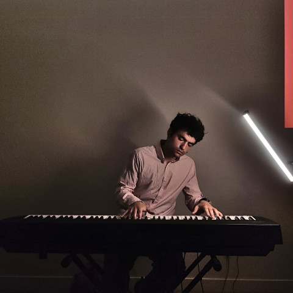
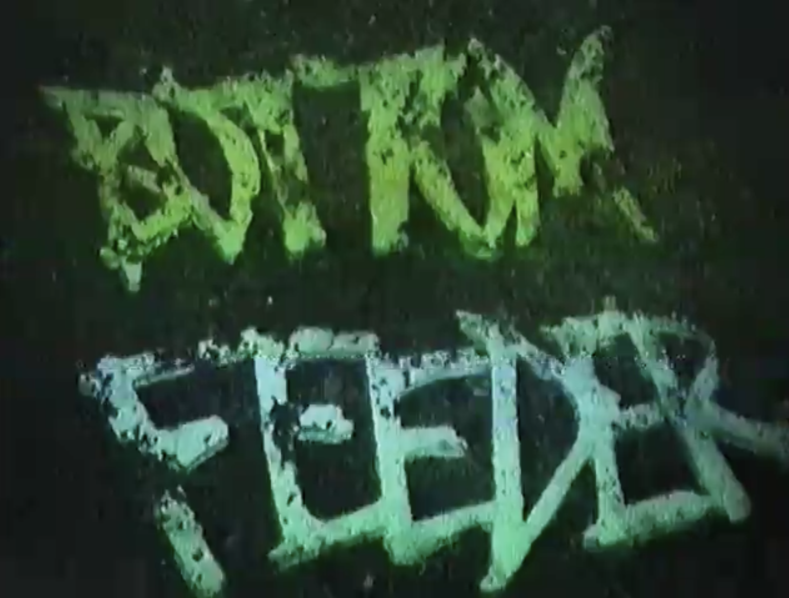
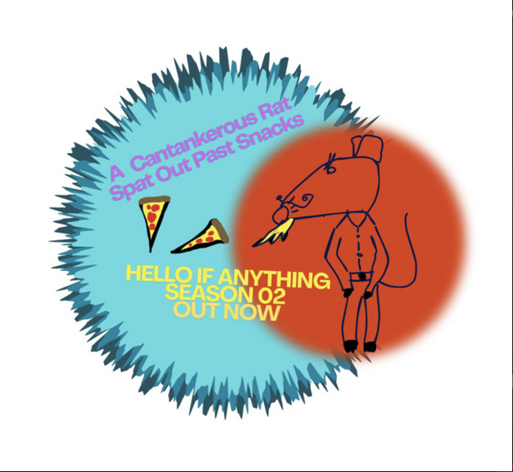

I play jazz piano and advertise my services on GigSalad. I have all 5-star reviews!

About/Contact
Theater
Music
Other Projects
.
I write songs and play jazz piano, guitar and a little bit of clarinet. I also record and produce music and narrative audio projects on Ableton. I love performing at events and making music for films or theater.

Bottom Feeder is a film by Adam Bruynesteyn that I made the musical score for.
I have some solo singer-songwriter music on my Bandcamp, this one is a sad-boy acoustic album but there's also some comedic stuff.

Hello If Anything is an ambient comedy podcast that I co-host and co-edit with my best buddy Devuroasts. I produce the soundtrack for it too.
You Want Milk is a rock band I used to be in. We haven't been active in a minute.